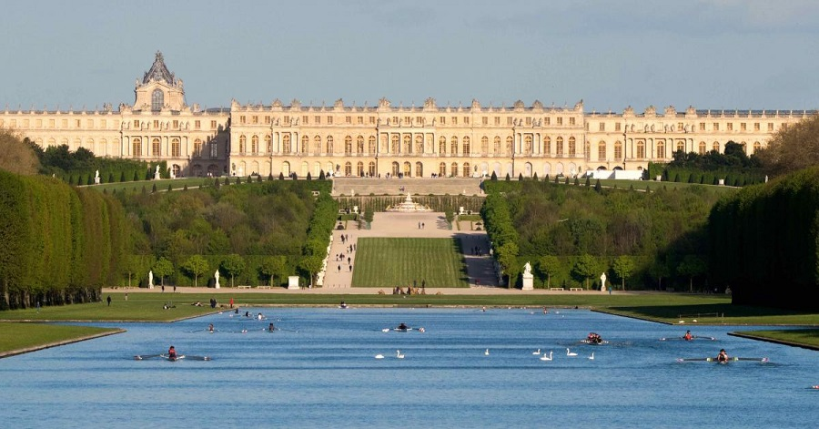
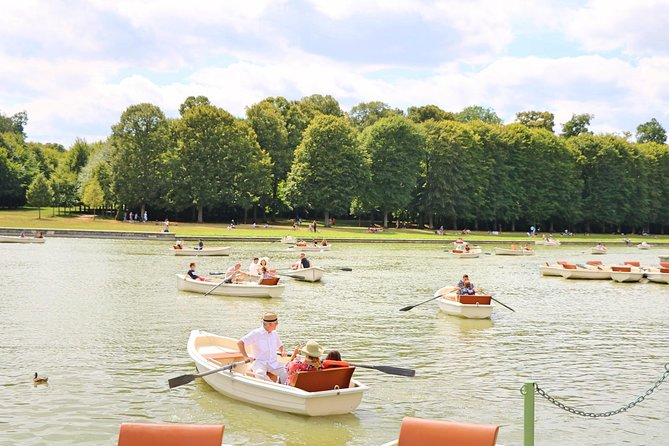
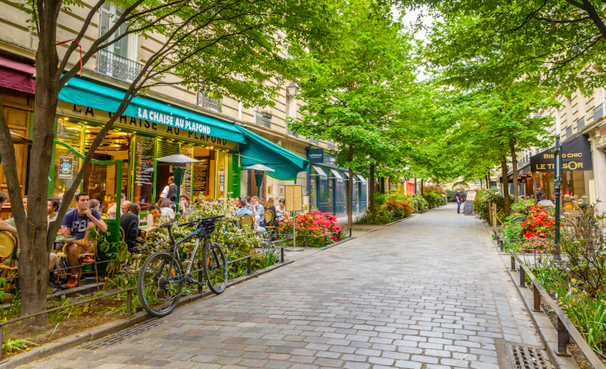
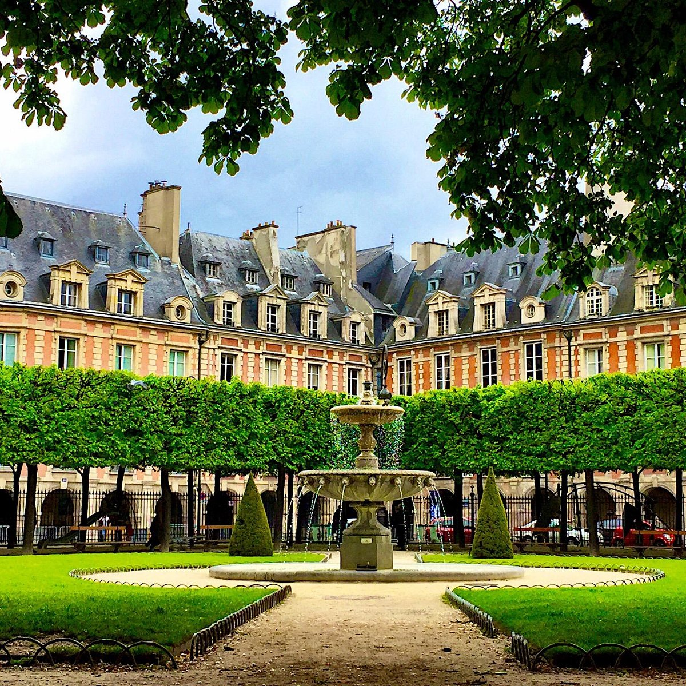

Día 6 - Mañana

Palacio de Versalles
Horario: (4-5 horas)
Toma el tren RER C temprano. Recorre el Palacio, los Jardines y, si es posible, la Aldea de María Antonieta.
Ver en Google MapsDía 6 - Mediodía

Almuerzo en Versalles o al regresar a París.
Horario: ?
Prueba la comida francesa o explora las calles de versalles.
Ver en Google MapsDía 6 - Tarde

Le Marais
Horario: 2 horas
Explora este barrio histórico lleno de encanto, boutiques y galerías.
Ver en Google Maps

Plaza de los Vosgos
Horario: 1 horaa
Descansa en la plaza más antigua de París.
Ver en Google MapsDía 4 - Noche

Ópera Garnier
Horario: 1 hora
Termina tu viaje visitando este majestuoso edificio, incluso si solo ves el interior.
Ver en Google Maps